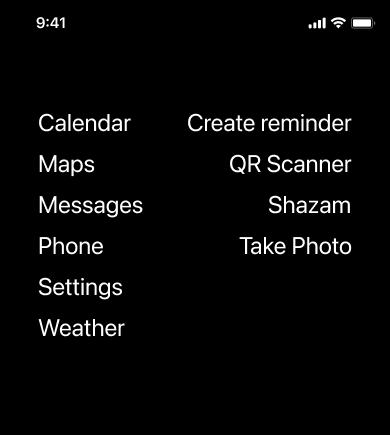

Hi, I'm Mateo Yadarola, a Product Designer who values the journey as much as the destination. My design journey spans over two decades, with more than ten years in leadership roles.
I'm currently at Continental Finance, where I'm shaping a mobile home banking app catering to users with poor credit scores. Beyond my 9-to-5, I'm an experimenter, a creator of side projects that aim to enhance the digital experience. Check out my GitHub; it's my digital playground where tools like ChronoMouse and MenuMaestro come to life.
I believe that creativity is a muscle—one that must be exercised regularly to be strengthened. This philosophy drives not only my professional work but also my passion for personal projects and experimentation.
Join me as I explore the question: "What if...?" in design and technology. Each project below represents a different way I've challenged myself to think creatively, push the boundaries of what's possible in our digital world, and find joy in the journey of creation and problem-solving.
What if cursors told the time?
In July 2023, I brought a personal idea to life by building ChronoMouse, a tool to keep track of time right beside the cursor. This project was more than just a coding exercise; it was a realization of a concept that came from recognizing a need in my own workflow. Learning to program in Swift allowed me to take control of the entire process, from the initial idea to the finished product, reinforcing the power of integrating design and development skills.
What if using real data in Figma was simpler?
While looking for ways in which we could bring real data into our designs I found a Figma plugin called Google sheets sync, which pretty much does what it says. It allows you to sync data in a google sheet with specific layers in your designs, but it lacks a way to import working clickable links. On a hack day, I decided to create Anchorify, a Figma Plugin for converting `text` and `[url=url]text[/url]` links into clickable hyperlinks. Another plugin, Word Hugger, refines text elements with isolated words, known as "orphans," ensuring a polished paragraph layout by grouping together the last couple of words. Because every word deserves company.
What if emails blogged?
Emails have always been an intuitive self-publishing tool, yet confined to specific recipients. To overcome this, I wrote a Google Apps script that adds a public folder to your Gmail account. This endeavor highlights the innovation possible when we reimagine the potential of everyday tools.
What if touchpads typed?
This month, I've been tinkering with my digital workspace. I started wondering: what if my touchpad worked as a keyboard? From this thought, TrackpadWizard was born. It's still a work in progress, but I'm happy with what I've accomplished so far. In addition, I created HyperlinkHijacker, a no-fuss tool to control your hyperlink destinations. Click a link, and you get a list of browsers/profiles to choose from.
What if icons are the problem?
People spend over 10 hours a day on screens. Teens average nearly 9 hours daily. Digital addiction has become a significant concern, driven by social media, algorithmic feeds, and persistent notifications. In response, I designed ZenTrate—a set of iOS widgets using Scriptable—drawing from digital minimalism and the simplicity of old point-and-click adventure games. ZenTrate replaces cluttered screens of colorful icons with a calm commands palette focused on verbs like "Pay" instead of navigating through a bank app, or "Set Timer" instead of opening the clocks app. By adapting to user behavior and enlarging frequently used actions, we can offer a more intentional and streamlined approach to technology use aiming to reduce the cognitive load and help users manage their screen time more effectively.

Bancón: Reimagining Banking for the Digital Age
In 2021, I led the UX design for Bancón at Bancor, driven by a fundamental question: How can we make banking as intuitive as using a virtual wallet? This project was born from the realization that traditional banking apps were losing ground to more user-friendly fintech solutions.
The Challenge
According to Veritran, 7 out of 10 users in Argentina prefer digital transactions through virtual wallets over traditional banking apps. Additionally, 3 out of 10 still visit physical branches for major transactions. Our mission was clear: transform an antiquated industry through User-Centered Design and drive the future of finance forward.
Our Approach
We implemented a user-centered design approach to modernize Bancor's mobile app. Our goal was to create an experience that was easily navigated by each of the bank's key audiences:
Older adults
Public employees
Students
Business owners
Key Features
Intuitive Interface: Redesigned UI that mimics the simplicity of popular virtual wallets.
Smart Categorization: Transactions automatically sorted and categorized for easy financial management.
Personalized Insights: AI-driven financial advice tailored to each user's spending habits and goals.
Seamless Transfers: One-tap transfers to frequently used contacts, rivaling the ease of peer-to-peer payment apps.
Virtual Assistant: An AI chatbot to guide users through complex banking operations.
Development Journey
Conducted extensive user research to understand the pain points of different user groups.
Created and tested multiple prototypes, iterating based on user feedback.
Collaborated closely with backend developers to ensure the feasibility of new features.
Implemented accessibility features to make the app usable for all, regardless of ability.
Impact and Results
The reimagined Bancón app saw significant growth in 2021:
Over 845,000 individual users
18,200 companies actively using the app
68,400 new customers onboarded
These numbers not only validated our user-centric approach but also demonstrated that traditional banks can compete with fintech startups when they prioritize user experience.
Some of my favorite touches:
The "financial health score" feature that gamifies good financial habits.
The subtle haptic feedback when completing a transaction, providing a sense of security.
The "branch finder" that uses AR to guide users to the nearest physical bank when needed.
In response to the COVID-19 pandemic, I led a project at Bancor to address a critical question: How can we alleviate user anxiety when card deliveries are delayed due to nationwide quarantine? This project was born from the urgent need to adapt our services to the unprecedented challenges posed by the pandemic.
The Challenge
The COVID-19 pandemic severely impacted traditional postal services, leading to significant delays in credit and debit card deliveries. This situation caused considerable anxiety among our customers, who were uncertain about when they would receive their cards and how they could access their funds in the meantime.
Our Solution
We developed a two-pronged approach to address this challenge:
In-App Delivery Tracking: Integrated real-time parcel tracking directly into the Bancor mobile app.
Push Notifications: Automatic updates on card status and estimated delivery dates.
Virtual Card Activation: Ability to use debit and prepaid cards for transfers and payments before physical card arrival.
Secure Digital Verification: Enhanced security measures to verify identity for virtual card activation.
Interactive FAQ: A dynamic, context-aware FAQ section to address common concerns about card delivery and usage.
Development Journey
Collaborated closely with our postal service provider to integrate their tracking API into our app.
Designed and implemented a user-friendly interface for tracking information, focusing on clarity and reassurance.
Worked with our security team to develop robust verification processes for virtual card activation.
Conducted rapid user testing to ensure the new features effectively reduced anxiety and improved user experience.
Impact and Insights
The implementation of these features significantly reduced customer support calls related to card deliveries. Users reported feeling more in control and less anxious about their banking services during the pandemic. The virtual card activation feature, in particular, proved so popular that it has become a permanent offering, even as delivery delays have normalized.
Some of my favorite touches:
The "card journey" visualization that shows the card's progress from printing to delivery in an engaging, animated timeline.
The calming color scheme and reassuring microcopy used throughout the tracking interface.
The "virtual unboxing" experience when activating a card digitally, complete with a satisfying unwrapping animation.
Continental Finance: Banking as a Game
At Continental Finance, I led the development of a gamified banking experience, driven by a critical question: How can we make improving credit scores as engaging as leveling up in a video game? This project aimed to address the challenges faced by the 48 million Americans deemed to have bad credit.
The Challenge
Qualifying for a credit card is particularly difficult for those with poor credit scores or no credit history. Traditional banking apps often fail to engage users in improving their financial health. We needed to find a way to not only help users grow their credit line but also educate them on why it's important.
Our Solution
We created a gamified banking app that turns the journey of improving one's credit score into an interactive and enjoyable experience.
Key Features
Financial Health Score: A dynamic score that updates in real-time based on user actions.
Quest System: Daily, weekly, and monthly financial tasks presented as quests with rewards.
Achievement Badges: Visual rewards for reaching financial milestones.
Interactive Credit Lessons: Bite-sized, gamified lessons on credit management and personal finance.
Spending Insights: AI-powered analysis of spending habits with actionable recommendations.
Credit Line Growth Visualization: An engaging visual representation of credit line increases.
Social Challenges: Optional feature to compete with friends on savings goals or budget adherence.
Development Journey
Conducted extensive research on gamification principles and their application in financial contexts.
Collaborated with financial educators to ensure the accuracy and relevance of educational content.
Designed an intuitive, visually appealing UI that makes financial information less intimidating.
Implemented a robust backend capable of securely handling financial data while supporting game-like features.
Conducted extensive user testing to fine-tune the balance between education and engagement.
Impact and Insights
The app has been well-received by users, with many reporting significant improvements in their credit scores and overall financial knowledge. We've seen increased engagement with budgeting tools and educational content compared to traditional banking apps.
Some of my favorite touches:
The "credit score growth" animation that plays when a user reaches a new milestone.
The "money tree" feature that grows or shrinks based on savings habits.
The "financial time machine" that projects future financial health based on current habits.
Lessons Learned
This project reinforced the power of gamification in driving behavior change. We learned that by aligning financial goals with human psychology and motivations, we could make the often daunting task of credit improvement feel achievable and even fun. It also highlighted the importance of continuous feedback in maintaining user engagement.
HometownLocal: Revolutionizing Home Services
At HometownLocal, I led the transformation of a simple demolition and construction rental web directory into a full-fledged platform for home services. The driving question was: What if we could make booking a home service as easy as ordering a ride?
The Challenge
The home service industry, particularly in demolition and construction, was ripe for disruption. Service providers were struggling with inefficient scheduling, communication gaps, and billing headaches. We saw an opportunity to streamline these processes and create an Uber-like experience for both service providers and homeowners.
Our Solution
We developed a comprehensive platform that covers the entire service lifecycle, from booking to billing. Here's what we built:
Key Features
Seamless Onboarding: A smooth, intuitive process for both service providers and customers to join the platform.
Smart Booking Flow: An AI-powered system that matches customer needs with the right service providers.
Multi-view Management Tools:
- Calendar view for easy scheduling
- Kanban board for job status tracking
- Map view for efficient route planning
Real-time Route Navigation: Integrated GPS navigation to help service providers reach job sites efficiently.
Internal Messaging System: A secure channel for clear communication between customers and service providers.
Automated Invoicing: Streamlined billing process that triggers upon job completion.
Development Journey
Conducted extensive research into the pain points of both home service providers and customers.
Rapidly prototyped and iterated on the UI/UX design, focusing on simplicity and efficiency.
Collaborated closely with backend developers to ensure seamless integration of complex features like real-time scheduling and route optimization.
Implemented a robust testing strategy to ensure the platform could handle the complexities of various home services.
Impact and Insights
The platform has transformed how home services are booked and managed in our target markets. Service providers report significant improvements in efficiency, with some seeing up to a 30% increase in completed jobs per week. Customers appreciate the transparency and ease of use, leading to higher satisfaction rates and repeat bookings.
Some of my favorite touches:
The "service provider match" feature that uses machine learning to pair customers with the best-suited professionals.
The satisfying "job complete" animation that plays when a service is marked as finished.
The "time-lapse" feature that automatically creates a video of before-and-after photos for significant renovation projects.
Protecting Your Business: Improving Liability Insurance Applications
Client: OMSNIC - Finance and insurance
Overview: How do we turn 112 different forms into one to create a fast and compelling onboarding flow for Oral & Maxillofacial Surgeons?
In order to streamline the onboarding process for Oral & Maxillofacial Surgeons, our team set out to consolidate the 112 different forms they were required to fill out.
We began by iterating over multiple ideas for a conversational quoting tool, allowing surgeons to quickly and easily provide the necessary information. After conducting user testing and gathering feedback, we refined and improved the tool, creating a fast and compelling onboarding experience for surgeons. This streamlined process has improved the user experience and made it easier for surgeons to complete the onboarding process.
At VENG, I led the conceptualization of an e-commerce platform for satellite imagery, driven by the question: What if accessing high-resolution satellite images was as easy as buying a book online? This project aimed to democratize access to advanced satellite technology and Earth observation data.
The Challenge
SAOCOM, a constellation of two high-resolution satellites, can observe Earth's surface 24/7, regardless of weather conditions. However, accessing this valuable data was complex and often restricted to specialized organizations. We saw an opportunity to make this technology accessible to a broader audience.
Our Solution
We developed an intuitive e-commerce platform that allows users to search, request, and purchase satellite images from the SAOCOM 1A & B satellites.
Key Features
Interactive Map Interface: Users can visually select areas of interest on a global map.
Advanced Search Filters: Options to filter images by date, weather conditions, resolution, and more.
Image Preview: Low-resolution previews of available images before purchase.
Custom Request System: Users can request images of specific areas not currently in the catalog.
Secure Payment Gateway: Integration with multiple payment methods for easy transactions.
Download Manager: Efficient delivery of large image files to users.
Usage Rights Management: Clear explanation and management of image usage rights.
Development Journey
Collaborated with satellite engineers to understand the capabilities and limitations of the SAOCOM satellites.
Designed an intuitive UI that simplifies complex satellite data for non-expert users.
Implemented a robust backend capable of handling large image files and complex search queries.
Developed a pricing algorithm that balances accessibility with the high costs of satellite operation.
Impact and Insights
The platform has opened up new markets for satellite imagery, from environmental researchers to urban planners and even artists. We've seen a significant increase in the use of SAOCOM data across various fields, contributing to advancements in climate research, agriculture, and urban development.
Some of my favorite touches:
The "Earth Diary" feature that shows users how their area of interest has changed over time.
The satisfying "capture" animation that plays when a user requests a new image.
The "resolution comparison" tool that visually demonstrates the power of SAOCOM's imaging capabilities.
I led the development of Vlic at Infoxel, driven by a pressing question: What if brand managers could instantly know how they're perceived in the media? This project emerged from the realization that in our fast-paced media landscape, staying informed is both crucial and increasingly challenging.
The Challenge
Politicians, journalists, and brand managers face a daunting task: keeping track of their brand's representation across TV, radio, and newspapers. The constant flow of information makes it easy to miss critical mentions or emerging trends.
Our Solution
We created Vlic, a mobile app that revolutionizes media monitoring. It's not just a news aggregator; it's a real-time brand perception tool that puts the power of media analysis in your pocket.
Key Features
Real-time Notifications: Instant alerts when your brand is mentioned, allowing for rapid response to emerging stories.
Customizable Feeds: Tailored news streams that focus on your specific brand or areas of interest.
One-tap Sharing: Quickly disseminate relevant news to your team or followers, fostering collaborative media management.
Sentiment Analysis: AI-powered insights into the tone and context of brand mentions.
Historical Trends: Track your brand's media presence over time, identifying patterns and areas for improvement.
Development Journey
Collaborated with a team of skilled engineers to build a robust backend capable of processing vast amounts of media data in real-time.
Designed an intuitive UI that presents complex media data in an easily digestible format.
Implemented machine learning algorithms to improve the accuracy of brand mention detection and sentiment analysis over time.
Impact and Insights
Vlic has transformed how professionals interact with media. It's not just about staying informed; it's about gaining a competitive edge through timely, actionable insights. The app has been particularly embraced by political campaign managers and PR professionals, who've reported making faster, more informed decisions about their public image strategies.
Some of my favorite touches:
The "media pulse" feature that visualizes the frequency and sentiment of brand mentions over the past 24 hours.
The satisfying "ping" sound when a high-priority mention is detected, distinct from regular notifications.
The "reaction time" metric that gamifies how quickly users respond to significant media mentions.